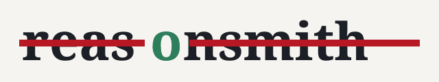
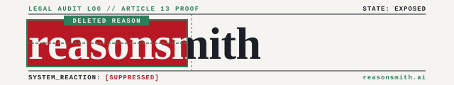

abstract / typographic · the name carries the strike · Newsreader + mono
| w1 redacted wordprocedural | ||
| w2 one strikeprocedural | ||
| w3 node letterprocedural | ||
| w4 two registersprocedural | ||
| w5 ruled auditprocedural | ||
| w6 erasureprocedural | ||
| alt codexcodex cli |  |
|
| alt agyagy cli |  |